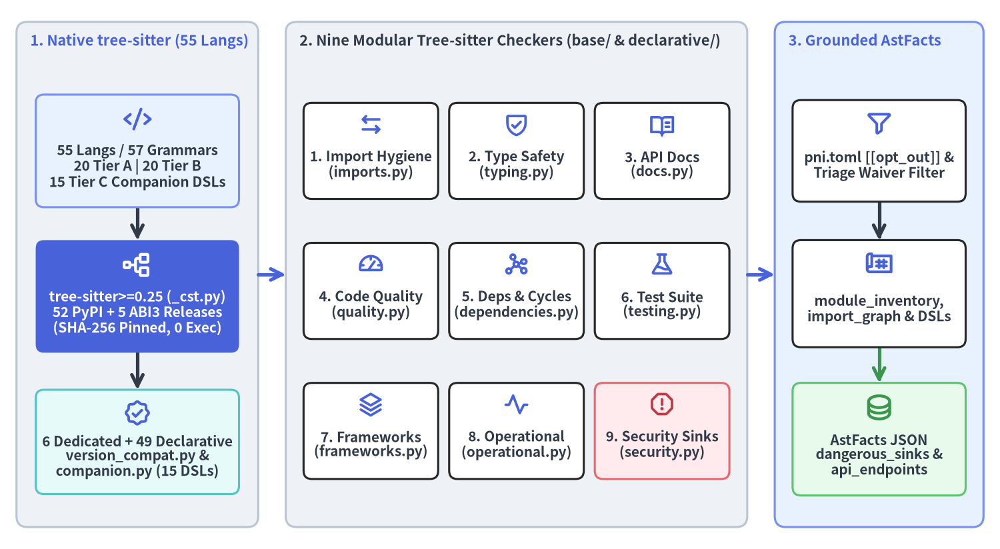
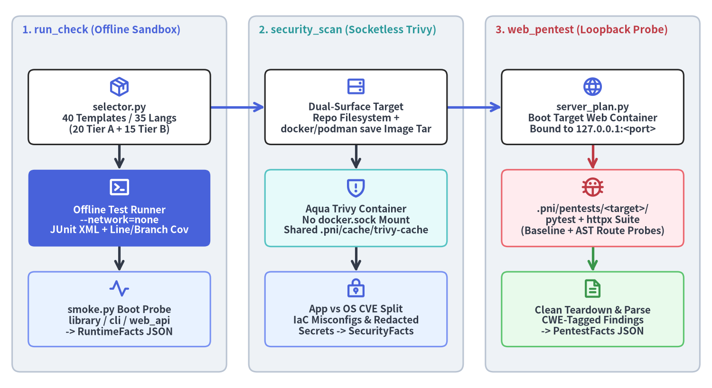

決定論的解析器、ネイティブ Tree-sitter CST、およびライブ侵入テスト
pni501 (v0.2.0) におけるすべての定量的メトリクス、依存関係グラフ、テストカバレッジ率、CVE 件数、Git 改修差分、およびライブ HTTP エクスプロイト検証は、LLM の推論ステップが実行される前に 7 個の決定論的 Python 解析器によって生成されます。従来の ast-grep-py を 55 言語 / 57 文法対応のネイティブ tree-sitter>=0.25.0 1 回パース CST エンジン（src/pni/_actions/ast_analyze/_cst.py）（src/pni/_languages/ の 52 PyPI パッケージ + SHA-256 ピン留め付きオンデマンド ABI3 GitHub Releases 5 文法）へ刷新し、35 言語・40 テンプレートの隔離 Docker/Podman コンテナサンドボックス、ソケットレス Trivy スキャン、およびライブループバック侵入テストと組み合わせることで、ハルシネーションのない 100% 再現可能なエンジニアリング証跡を保証します。

Source Code
from drawlib.canvas import save, setup
from drawlib.diagrams.architecture import ArchitectureDiagram, Node, NodeGroup, PhosphorIcon
from drawlib.styles import Styles
setup(width=182, height=100, dpi=150)
diag = ArchitectureDiagram(
node_style=Styles.PrimaryBold,
node_text_style=Styles.DarkBold.patch(text_size=10.0),
edge_style=Styles.DarkBold,
edge_text_style=Styles.DarkBold.patch(text_size=10.0),
node_card_style=Styles.WhiteBordered.patch(shape_r=1.5),
)
g_in = diag.add(
NodeGroup(
title="1. Native tree-sitter (55 Langs)",
width=44.0,
height=92.0,
style=Styles.Neutral.patch(shape_r=2.0),
text_style=Styles.PrimaryBold.patch(text_size=10.5, halign="left", valign="top"),
),
xy=(3.0, 4.0),
)
n_langs = g_in.add(
Node(
"55 Langs / 57 Grammars\n20 Tier A | 20 Tier B\n15 Tier C Companion DSLs",
width=37.0,
height=20.5,
icon=PhosphorIcon.CODE,
icon_size=5.2,
card_style=Styles.PrimaryNeutral.patch(shape_r=1.5),
),
xy=(22.0, 68.5),
)
n_cst = g_in.add(
Node(
"tree-sitter>=0.25 (_cst.py)\n52 PyPI + 5 ABI3 Releases\n(SHA-256 Pinned, 0 Exec)",
width=37.0,
height=20.5,
icon=PhosphorIcon.TREE_STRUCTURE,
icon_size=5.4,
style=Styles.WhiteBold,
text_style=Styles.WhiteBold.patch(text_size=10.0),
card_style=Styles.PrimaryFlat.patch(shape_r=1.5),
),
xy=(22.0, 42.0),
)
n_ver = g_in.add(
Node(
"6 Dedicated + 49 Declarative\nversion_compat.py &\ncompanion.py (15 DSLs)",
width=37.0,
height=19.0,
icon=PhosphorIcon.SEAL_CHECK,
icon_size=5.0,
card_style=Styles.SecondaryNeutral.patch(shape_r=1.5),
),
xy=(22.0, 15.5),
)
g_chk = diag.add(
NodeGroup(
title="2. Nine Modular Tree-sitter Checkers (base/ & declarative/)",
width=84.0,
height=92.0,
style=Styles.Neutral.patch(shape_r=2.0),
text_style=Styles.DarkBold.patch(text_size=10.5, halign="left", valign="top"),
),
xy=(52.0, 4.0),
)
c1 = g_chk.add(Node("1. Import Hygiene\n(imports.py)", width=24.5, height=17.5, icon=PhosphorIcon.ARROWS_LEFT_RIGHT, icon_size=4.8), xy=(15.5, 68.5))
c2 = g_chk.add(Node("2. Type Safety\n(typing.py)", width=24.5, height=17.5, icon=PhosphorIcon.SHIELD_CHECK, icon_size=4.8), xy=(42.0, 68.5))
c3 = g_chk.add(Node("3. API Docs\n(docs.py)", width=24.5, height=17.5, icon=PhosphorIcon.BOOK_OPEN_TEXT, icon_size=4.8), xy=(68.5, 68.5))
c4 = g_chk.add(Node("4. Code Quality\n(quality.py)", width=24.5, height=17.5, icon=PhosphorIcon.GAUGE, icon_size=4.8), xy=(15.5, 43.0))
c5 = g_chk.add(Node("5. Deps & Cycles\n(dependencies.py)", width=24.5, height=17.5, icon=PhosphorIcon.GRAPH, icon_size=4.8), xy=(42.0, 43.0))
c6 = g_chk.add(Node("6. Test Suite\n(testing.py)", width=24.5, height=17.5, icon=PhosphorIcon.FLASK, icon_size=4.8), xy=(68.5, 43.0))
c7 = g_chk.add(Node("7. Frameworks\n(frameworks.py)", width=24.5, height=17.5, icon=PhosphorIcon.STACK, icon_size=4.8), xy=(15.5, 17.5))
c8 = g_chk.add(Node("8. Operational\n(operational.py)", width=24.5, height=17.5, icon=PhosphorIcon.PULSE, icon_size=4.8), xy=(42.0, 17.5))
c9 = g_chk.add(
Node(
"9. Security Sinks\n(security.py)",
width=24.5,
height=17.5,
icon=PhosphorIcon.WARNING_OCTAGON,
icon_size=4.8,
style=Styles.DangerBold,
card_style=Styles.DangerNeutral.patch(shape_r=1.5),
),
xy=(68.5, 17.5),
)
g_out = diag.add(
NodeGroup(
title="3. Grounded AstFacts",
width=38.0,
height=92.0,
style=Styles.PrimaryNeutral.patch(shape_r=2.0),
text_style=Styles.PrimaryBold.patch(text_size=10.5, halign="left", valign="top"),
),
xy=(141.0, 4.0),
)
n_opt = g_out.add(
Node(
"pni.toml [[opt_out]] &\nTriage Waiver Filter",
width=31.5,
height=18.5,
icon=PhosphorIcon.FUNNEL,
icon_size=5.0,
),
xy=(19.0, 68.5),
)
n_inv = g_out.add(
Node(
"module_inventory,\nimport_graph & DSLs",
width=31.5,
height=19.5,
icon=PhosphorIcon.BLUEPRINT,
icon_size=5.2,
),
xy=(19.0, 42.5),
)
n_facts = g_out.add(
Node(
"AstFacts JSON\ndangerous_sinks &\napi_endpoints",
width=31.5,
height=20.5,
icon=PhosphorIcon.DATABASE,
icon_size=5.4,
style=Styles.SuccessBold,
card_style=Styles.SuccessNeutral.patch(shape_r=1.5),
),
xy=(19.0, 16.0),
)
diag.connect(n_langs, n_cst, routing="orthogonal")
diag.connect(n_cst, n_ver, routing="orthogonal")
diag.connect(g_in, g_chk, routing="orthogonal", style=Styles.PrimaryBold)
diag.connect(g_chk, g_out, routing="orthogonal", style=Styles.PrimaryBold)
diag.connect(n_opt, n_inv, routing="orthogonal")
diag.connect(n_inv, n_facts, routing="orthogonal", style=Styles.SuccessBold)
diag.draw(xy=(0.0, 0.0))
save()
1. 静的リポジトリ検査とネイティブ tree-sitter CST 解析器
1.1 リポジトリ・サプライチェーン・ガバナンス検査器 (project_inspect -> ProjectFacts)
src/pni/_actions/project_inspect.py、_extended_manifests.py、および _repo_governance.py に実装された run_project_inspect() は、外部パッケージマネージャを実行することなく構造・依存・ドキュメント・OpenSSF サプライチェーンシグナルを抽出します。
- 55 言語対応マニフェスト & ロックファイル解析: コアマニフェスト（
pyproject.toml/setup.py/requirements.txt,pom.xml/build.gradle*,composer.json/WordPress ヘッダ,go.mod/go.sum,package.json/tsconfig.json）に加え、_extended_manifests.pyを通じて Tier A/B/C の拡張マニフェスト（Cargo.toml,*.csproj/Directory.Packages.props,Gemfile,Package.swift,build.sbt,pubspec.yaml,mix.exs,CMakeLists.txt,*.cabal,build.zig,Project.toml等）を解析し、lockfiles_found,unpinned_dependencies,detected_frameworks,runtime_types,legacy_language_findings,tooling_modernization_issuesを検出します。 - OpenSSF サプライチェーン & リポジトリガバナンス (
_repo_governance.py):has_license,has_security_policy（SECURITY.md）,has_dependency_automation（Dependabot / Renovate）, GitHub Actions のci_supply_chain_issues（可変な@main/@master参照、permissions:欠如、肥大化したインライン bash）、committed_secret_files、Diátaxisreadme_headings/docs_inventory、および静的container_hygiene_issuesを監査します。
1.2 ネイティブ tree-sitter>=0.25.0 1 回パース CST 解析器 (ast_analyze -> AstFacts)
src/pni/_actions/ast_analyze/ に実装された run_ast_analyze() は、ast-grep-py を ネイティブ tree-sitter>=0.25.0 1 回パース CST ラッパー（_cst.py）に置き換えています。
- 1 パス・インデックス走査 (
_CstDocument&CstNode): 信頼できないコードを一切実行せずに各ファイルを 1 回だけtree_sitter.Treeへパースし、遅延 1 パスTreeCursorによるkind -> (start_bytes, nodes)インデックスとbisect二分探索で全チェッカーを高速化します。 _languages/registry.pyと_grammar_assets.pyによる 55 言語 / 57 文法対応:- 6 専用スイート（
python/,java/,php/,go/,ts_js/）+ 49 宣言的文法プロファイル（declarative/profiles_tier_a.py,profiles_tier_b.py,profiles_tier_c.py：CweSinkRule,BugIdiomRule, カスタム CST フック）が Tier A 20・Tier B 20・Tier C 15 の全 55 言語をカバーします。 - 52 PyPI 文法 wheel + 5 オンデマンド ABI3 リリース文法: 3 OS 向け PyPI wheel が存在しない 5 文法（COBOL, Dockerfile, Protocol Buffers, R, Vue）は GitHub Releases（
grammars-v0.2.0）から SHA-256 ダイジェスト検証済みで遅延取得し、PNI_GRAMMAR_CACHE_DIR->src/pni/_cached_grammars->~/.cache/pni501/grammarsの自動フォールバック先へキャッシュします。 - コンパニオン DSL 自動スキャン (
companion.py):repoスコープの監査やロールアップでは、scan_companion_languages()が主言語と並行して 15 種の Tier C コンパニオン DSL（Dockerfile, HCL/Terraform, Bicep, Nix, Make, Starlark, Protobuf, SQL, HTML, CSS/SCSS, YAML, JSON, TOML, XML）を自動解析します。
- 6 専用スイート（
| # | チェッカーモジュール | 抽出される主な AstFacts 出力とシグナル |
|---|---|---|
| 1 | インポート衛生 (imports.py) |
import_hygiene_coverage_pct、unsorted_imports、wildcard_imports、関数内 late_imports |
| 2 | 型安全性 (typing.py) |
type_safety_coverage_pct、型注釈欠落（type_safety_issues）、弱い型（weak_type_usages）、および unscoped_type_ignores |
| 3 | API ドキュメント (docs.py) |
docstring_coverage_pct、missing_docstrings、empty_docstrings、PEP 727 Annotated[..., Doc()] 対応、および doc_signature_mismatches |
| 4 | コード品質 & インベントリ (quality.py) |
正確な total_files, total_loc, total_classes, total_functions、ファイル別 module_inventory、complex_functions（> 50 行、> 7 分岐、または認知的複雑度 > 15）、excessive_parameters（> 6）、global_state_usages、bug_risk_idioms |
| 5 | 依存関係 & レイヤー境界 (dependencies.py) |
internal_import_graph、Tarjan SCC circular_dependencies、型チェック専用の type_checking_cycles、unused_dependencies、undeclared_dependencies、boundary_violations |
| 6 | テストスイート健全性 (testing.py) |
test_functions_count、module_test_coverage_pct、assertion_free_tests、および主要テストフレームワーク/フィクスチャ検出 |
| 7 | フレームワーク & イディオム (frameworks.py) |
FastAPI/Flask/Django、Spring Boot、Laravel/WordPress、Gin/Echo、Express/NestJS/Next.js 等のフレームワーク固有アンチパターン（framework_issues）と modernization_hints |
| 8 | 運用性 & 12-Factor (operational.py) |
missing_io_timeouts（タイムアウト未指定の HTTP/DB/RPC）、scattered_env_access、unstructured_logging、AST レベルの hardcoded_secrets |
| 9 | セキュリティシンク & ルート (security.py) |
CWE 分類付き dangerous_sinks（sql_injection, xss, command_injection, unsafe_deserialization, code_execution, path_traversal）および抽出された HTTP ルート（api_endpoints） |
1.3 言語バージョン互換性チェックと pni.toml 除外フィルタリング
9 個のチェッカーと並行して、run_ast_analyze() は 2 つの横断的決定論パスを実行します。
- マニフェスト対構文の互換性検証 (
version_compat.py): パースされた CST 構文をマニフェストの最小ランタイムバージョン（requires-python、Maven/Gradle Java ターゲット、composer.jsonPHP 制約、go.modのgoディレクティブ）と照合し、language_version_mismatchesを検出します。 - 監査証跡付き
[[opt_out]]除外 (pni.toml&confirm_plan):.pni/pni.tomlの[[opt_out]]およびconfirm_planで承認されたextra_opt_outsに基づきCodeLocation/SecuritySinkLocationをフィルタリングし、opt_out_match_countsとemit_scoreのfinding_adjustmentsトリアージ記録を併せて透明性を保ちます。
2. 隔離コンテナサンドボックス: ランタイム検証、Trivy、ライブ侵入テスト
ホスト環境を汚染せず外部ネットワークへの誤送信を防ぐため、pni501 は run_check、security_scan、および web_pentest を隔離された Docker または Podman コンテナ内（engine_detect.py が rootless Podman または Docker を自動検出）で実行します。

Source Code
from drawlib.canvas import save, setup
from drawlib.diagrams.architecture import ArchitectureDiagram, Node, NodeGroup, PhosphorIcon
from drawlib.styles import Styles
setup(width=176, height=96, dpi=150)
diag = ArchitectureDiagram(
node_style=Styles.PrimaryBold,
node_text_style=Styles.DarkBold.patch(text_size=10.0),
edge_style=Styles.DarkBold,
edge_text_style=Styles.DarkBold.patch(text_size=10.0),
node_card_style=Styles.WhiteBordered.patch(shape_r=1.5),
)
g1 = diag.add(
NodeGroup(
title="1. run_check (Offline Sandbox)",
width=53.0,
height=88.0,
style=Styles.Neutral.patch(shape_r=2.0),
text_style=Styles.PrimaryBold.patch(text_size=10.5, halign="left", valign="top"),
),
xy=(3.0, 4.0),
)
r1 = g1.add(
Node(
"selector.py\n40 Templates / 35 Langs\n(20 Tier A + 15 Tier B)",
width=45.0,
height=18.5,
icon=PhosphorIcon.PACKAGE,
icon_size=5.2,
),
xy=(26.5, 65.5),
)
r2 = g1.add(
Node(
"Offline Test Runner\n--network=none\nJUnit XML + Line/Branch Cov",
width=45.0,
height=19.0,
icon=PhosphorIcon.TERMINAL_WINDOW,
icon_size=5.4,
style=Styles.WhiteBold,
text_style=Styles.WhiteBold.patch(text_size=10.0),
card_style=Styles.PrimaryFlat.patch(shape_r=1.5),
),
xy=(26.5, 40.5),
)
r3 = g1.add(
Node(
"smoke.py Boot Probe\nlibrary / cli / web_api\n-> RuntimeFacts JSON",
width=45.0,
height=18.5,
icon=PhosphorIcon.PULSE,
icon_size=5.2,
card_style=Styles.PrimaryNeutral.patch(shape_r=1.5),
),
xy=(26.5, 15.5),
)
g2 = diag.add(
NodeGroup(
title="2. security_scan (Socketless Trivy)",
width=53.0,
height=88.0,
style=Styles.Neutral.patch(shape_r=2.0),
text_style=Styles.SecondaryBold.patch(text_size=10.5, halign="left", valign="top"),
),
xy=(61.5, 4.0),
)
s1 = g2.add(
Node(
"Dual-Surface Target\nRepo Filesystem +\ndocker/podman save Image Tar",
width=45.0,
height=18.5,
icon=PhosphorIcon.HARD_DRIVES,
icon_size=5.2,
),
xy=(26.5, 65.5),
)
s2 = g2.add(
Node(
"Aqua Trivy Container\nNo docker.sock Mount\nShared .pni/cache/trivy-cache",
width=45.0,
height=19.0,
icon=PhosphorIcon.SHIELD_WARNING,
icon_size=5.4,
card_style=Styles.SecondaryNeutral.patch(shape_r=1.5),
),
xy=(26.5, 40.5),
)
s3 = g2.add(
Node(
"App vs OS CVE Split\nIaC Misconfigs & Redacted\nSecrets -> SecurityFacts",
width=45.0,
height=18.5,
icon=PhosphorIcon.LOCK_KEY,
icon_size=5.2,
card_style=Styles.PrimaryNeutral.patch(shape_r=1.5),
),
xy=(26.5, 15.5),
)
g3 = diag.add(
NodeGroup(
title="3. web_pentest (Loopback Probe)",
width=53.0,
height=88.0,
style=Styles.Neutral.patch(shape_r=2.0),
text_style=Styles.DangerBold.patch(text_size=10.5, halign="left", valign="top"),
),
xy=(120.0, 4.0),
)
p1 = g3.add(
Node(
"server_plan.py\nBoot Target Web Container\nBound to 127.0.0.1:<port>",
width=45.0,
height=18.5,
icon=PhosphorIcon.GLOBE,
icon_size=5.2,
),
xy=(26.5, 65.5),
)
p2 = g3.add(
Node(
".pni/pentests/<target>/\npytest + httpx Suite\n(Baseline + AST Route Probes)",
width=45.0,
height=19.0,
icon=PhosphorIcon.BUG,
icon_size=5.4,
style=Styles.DangerBold,
card_style=Styles.DangerNeutral.patch(shape_r=1.5),
),
xy=(26.5, 40.5),
)
p3 = g3.add(
Node(
"Clean Teardown & Parse\nCWE-Tagged Findings\n-> PentestFacts JSON",
width=45.0,
height=18.5,
icon=PhosphorIcon.FILE_TEXT,
icon_size=5.2,
style=Styles.SuccessBold,
card_style=Styles.SuccessNeutral.patch(shape_r=1.5),
),
xy=(26.5, 15.5),
)
diag.connect(r1, r2, routing="orthogonal")
diag.connect(r2, r3, routing="orthogonal")
diag.connect(r1, s1, routing="orthogonal", style=Styles.PrimaryBold)
diag.connect(s1, s2, routing="orthogonal")
diag.connect(s2, s3, routing="orthogonal")
diag.connect(s1, p1, routing="orthogonal", style=Styles.PrimaryBold)
diag.connect(p1, p2, routing="orthogonal", style=Styles.DangerBold)
diag.connect(p2, p3, routing="orthogonal", style=Styles.SuccessBold)
diag.draw(xy=(0.0, 0.0))
save()
2.1 隔離コンテナランタイム検証 (run_check -> RuntimeFacts)
src/pni/_actions/runtime_check/ に実装された run_runtime_check() は、隔離コンテナ内でビルド可能性、単体テスト実行、カバレッジ計測、および起動健全性を検証し、.pni/cache/<workflow_id>/runtime/runtime_facts.json に永続化します。
- 35 言語・40 種の組み込みハーネステンプレート (
selector.py): Tier A 全 20 言語（python/{uv,poetry,pip},java/{maven,gradle},php/{composer,raw},go,typescript/javascript/vue,rust/cargo,csharp/dotnet,ruby/bundler,kotlin/{gradle,maven},swift/swiftpm,c/cpp/cmake,scala/sbt,dart/pub,elixir/mix,perl/cpan,r,cobol/gnucobol）に加え、Linux ネイティブ Tier B 15 言語（bash,powershell,groovy,lua,haskell,fsharp,ocaml,zig,julia,fortran,svelte,ada,commonlisp,verilog,vhdl）を網羅します。Workflow v2 DAG ではwhen: "has_runtime_harness"によりハーネス非対応言語のコンテナステップを安全に自動スキップします。 - オフライン単体テスト & 実測カバレッジ (
--network=none): 外部通信を遮断する--network=noneでテストスイートを実行し、JUnit XML（TestExecutionResult+FailedTestCase抜粋）や各言語カバレッジレポート（pytest-covJSON、JaCoCo XML、Clover XML、go test -coverprofile、Vitest/Jest のcoverage-summary.json/lcov.info）から行・分岐カバレッジを抽出します。 - アーキタイプ別スモークプローブ (
smoke.py):runtime_types（library,cli,cli+library,web_api）に応じた起動検証を行い、失敗要因をBootFailureKindに分類します。
2.2 ソケットレスコンテナ脆弱性 & シークレットスキャン (security_scan -> SecurityFacts)
src/pni/_actions/security_scan/ に実装された run_security_scan() は、共有脆弱性 DB キャッシュ（.pni/cache/trivy-cache/）をマウントしたソケットレスコンテナ内で Aqua Trivy（ghcr.io/aquasecurity/trivy）を実行し、.pni/cache/<workflow_id>/security/security_facts.json に永続化します。
docker.sock不要の二面スキャン: ホストの/var/run/docker.sockを一切マウントせず、リポジトリファイルシステム（scan_filesystem）とdocker save/podman saveのイメージ tar（scan_resolved_image）の両方をスキャンします。- 4段階の脆弱性スコープ分類 (
runtime_core,dev_or_optional,os_package,harness_os) とマスク済みシークレット: 重複排除された CVE をapp_vuln_countsとos_vuln_countsに分離し、dep_scopes.pyで依存スコープとベースイメージ内グローバルツールチェーンを判別した上で、IaC/Dockerfile のmisconfigurationsおよびマスク済みSecretFindingItemを抽出します。
2.3 ライブループバック Web ペネトレーションテスト (web_pentest -> PentestFacts)
src/pni/_actions/pentest/ に実装された run_web_pentest() は、Web アプリケーションに対する動的なブラックボックス HTTP セキュリティプローブを実行し、.pni/cache/<workflow_id>/pentest/pentest_facts.json に永続化します。
- フェイルクローズドな明示的プローブスイート (
.pni/pentests/<target>/):web_pentestを含むワークフローは、.pni/pentests/<target>/にconftest.pyとtest_*.pyが存在しない限りpni workflows start時にフェイルクローズドでブロックします。pni pentests init -w <workflow_id>により、ベースラインのセキュリティヘッダ・CORS・HTTP メソッド検証に加え、AstFacts.api_endpointsから自動合成されたtest_target_surface.pyが生成されます。 - ループバックコンテナ実行 (
127.0.0.1):server_plan.pyがホストのループバック（127.0.0.1:<port>）に厳密バインドされたコンテナ内で Web サーバーを起動し、pytest + httpx実行後にコンテナをクリーン破棄して CWE タグ付きPentestFindingItemを抽出します。
# 追加 ABI3 文法の事前取得、AST 連動ペネトレーションテスト生成、ループバック実行
pni grammars prefetch --all
pni pentests init -w <workflow_id>
pni pentests run -w <workflow_id>
3. グラフ駆動マイグレーション解析器 & Git 進捗解析器 (migration_analyze & progress_analyze)
- マイグレーション解析器 (
src/pni/_actions/migration_analyze/->MigrationFacts): 完了済みbased_on監査に紐づくcategory: migrationワークフローを支え、Tarjan SCCcycle_cutsとトポロジカルWaves 1..4（graph_waves.py）、implicit_contracts/env_contracts（contracts.py）、in_memory_state/persistence_db/external_http_rpcのboundary_touchpoints（touchpoints.py）、自動 Codemod レシピ（codemods.py）、および Hyrum の法則に関わるDEC-XXspec_vs_bug_candidates（ambiguities.py）を算出します。 - 進捗解析器 (
src/pni/_actions/progress_analyze/->ProgressFacts):category: progressワークフローを支え、Git ブランチ・コミット履歴・PR タスク証跡・ポリシー違反および.pni/history/audit/ベースラインを比較して改修ベロシティを定量化します。
続いて、これらの決定論的ファクトが 7軸品質スコアリングモデル および Drawlib ビジュアルレポーター にどのように統合されるかを確認するか、対応 55 言語マトリクス で Tier A/B/C 全言語の解析詳細を参照してください。